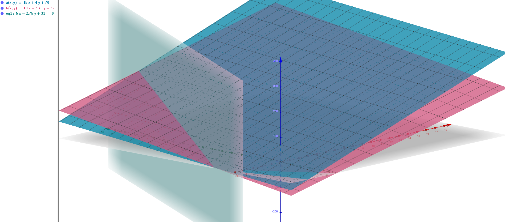

Grunden til at vi var nødt til at bruge lineær regression for at bestemme vores
model er at vi havde ikke taget højde for alle de variabler der indår i prisbestemmelsen
for et taxaselskab. Den anden variabel er den tid rejsen tager, men den kan
være meget vanskelig at bestemme alene ud fra rejsens længde, da den afhænger
af lokale forhold som fartgrænsen og trafik generelt. Lad os nu prøve at lave
en mere fuldstændig prismodel for nogle taxaselskaber ved at kigge her. Jeg vælger Drivr og taster følgende ind i
mit matematikprogram
$$15x+4y+70$$
hvor 15 svarer til kilometer-prisen, x svarer til antal kørte kilometer, 4
svarer til minutprisen og y til antal kørte minutter, og 70 er startgebyret.
Det jeg får er
Det er en såkaldt flade og det kommer i nok ikke til at se igen indtil i 3g.
Men hvad viser fladen egentlig? Den viser prisen på enhver rejse når vi kender
både afstanden og tiden. Lad os nu tilføje Taxa 4x35, som får en lyserød flade

og det vi kan se er at de to flader skærer hinanden i en linje, repræsenteret
ved den grå "skygge", som angiver de rejser hvor de to taxaselskaber har den
samme pris. Vi kan finde den algebraisk ved at sætte de to modeller lig med
hinanden og samle alle tingene på den samme side, dvs.
\begin{align}
&&15x+4y+70=&10x+6.75y+39\\
\iff&&(15-10)x+(4-6.75)y+70-39=&0\\
\iff&&5x-2.75y+31=&0
\end{align}
Nu glemmer jeg de der flader hvor ligningen kom fra, og tegner den i et helt
almindeligt koordinatsystem.
 Hvis vi kigger på skæringen med x-aksen svarer det til hvor langt vi kan køre
i de to taxaselskaber til den samme pris hvis det ikke tager nogen tid, dvs.
hvis vi teleporterer. Vi kan gøre det algebraisk ved at sætte \(y=0\)
$$5x-2.75⋅0+31=0\iff x=-\frac{31}{5}=-6.2$$
Det er det samme som vi har fået på computeren(punkt A) men er svært at fortolke
da man ikke kan have negative afstande. Men skæringen med y kan vi finde ved
at sætte \(x=0\)
$$5⋅0-2.75y+31=0\iff y=\frac{31}{2.75}\approx11.27$$
hvilket kan fortolkes som at man kan sidde i taxaen i 11.27 minutter til den
samme pris for de to taxaselskaber hvis man ikke kører, hvilket kan være nyttigt
at vide hvis man har været til fest og lige skal slappe lidt af. Den sidste
geometriske fortolkning opnås ved at kigge på
vektoren
$$\underline{n}={5\choose-2.75}$$
der består af "koefficienterne" for x og y, og repræsenteres ved en pil der
går 5 til højre og 2.75 ned. Denne vektor kaldes normalvektoren til linjen
og står vinkelret på linjen.
Hvis vi kigger på skæringen med x-aksen svarer det til hvor langt vi kan køre
i de to taxaselskaber til den samme pris hvis det ikke tager nogen tid, dvs.
hvis vi teleporterer. Vi kan gøre det algebraisk ved at sætte \(y=0\)
$$5x-2.75⋅0+31=0\iff x=-\frac{31}{5}=-6.2$$
Det er det samme som vi har fået på computeren(punkt A) men er svært at fortolke
da man ikke kan have negative afstande. Men skæringen med y kan vi finde ved
at sætte \(x=0\)
$$5⋅0-2.75y+31=0\iff y=\frac{31}{2.75}\approx11.27$$
hvilket kan fortolkes som at man kan sidde i taxaen i 11.27 minutter til den
samme pris for de to taxaselskaber hvis man ikke kører, hvilket kan være nyttigt
at vide hvis man har været til fest og lige skal slappe lidt af. Den sidste
geometriske fortolkning opnås ved at kigge på
vektoren
$$\underline{n}={5\choose-2.75}$$
der består af "koefficienterne" for x og y, og repræsenteres ved en pil der
går 5 til højre og 2.75 ned. Denne vektor kaldes normalvektoren til linjen
og står vinkelret på linjen.
Linjens Ligning
Punkterne \((x,y)\) der opfylder følgende ligning
$$ax+by+c=0$$
ligger på en linje der står vinkelret på vektoren
$$\underline{n}={a\choose b}$$
der kaldes normalvektoren for linjen. Værdien for c kan bestemmes ved
$$-c=ax_1+by_1$$
hvor \((x_1,y_1)\) svarer til et vilkårligt punkt på linjen.
Hvis vi gerne vil finde skæringen mellem to ligninger algebraisk er der
et lille problem, nemlig at der er to ubekendte frem for en. De to metoder
vi bruger for at finde skæringen handler derfor om at fjerne den ene ubekendte.
Lige Store Koefficienter
Lad os sige at vi har to linjer, \(2x+3y+4=0\) og \(3x-4y+5=0\). Navnet
kommer fra at vi gør ligningernes koefficienter lige store, ved at gange
ligningerne med hvert sit tal, hvorefter vi trækker dem fra hinanden
\begin{align}
&&3⋅(0=&2x+3y+4)=6x+9y+12\\
&&2⋅(0=&3x+4y+5)=6x+8y+10\\
&&0=&(6-6)x+(9-8)y+12-10\\
\iff&&0=&y+2\\
\iff&&y=&-2
\end{align}
Her gangede vi den første ligning med 3, den anden med 2 og x-koefficienten
blev 6. Det gjorde at vi kunne trække de to ligninger fra hinanden for
at fjerne x-leddene hvilket gjorde at vi kunne isolere y. For så at finde
x sætter vi den fundne y-værdi ind i en af ligningerne, fx.
$$0=2x+3⋅(-2)+4=2x-2\iff x=1$$
derfor er skæringen mellem de to linjer i \((1,-2)\).
Substitution
Den anden metode er lidt mere vanskelig generelt, men kan anvendes noget
bredere. Den hedder substitution fordi vi isolerer den ene variabel i den
ene ligning
$$2x+3y+4=0\iff x=-\frac{3y+4}{2}$$
og så indsætter(substituerer) den i den anden,
\begin{align}
&&2⋅(0=&3⋅\left(-\frac{3y+4}{2}\right)+4y+5)\\
\iff&&0=&-9y-12+8y+10\\
&&=&-y-2\\
\iff&& y=&-2
\end{align}
Til sidst kan vi beregne
$$x=-\frac{3⋅(-2)+4}{2}=-\frac{-2}{2}=1$$
Hvis du føler at den metode var lidt mere vanskelig er du slet ikke alene,
men den er som sagt anvendelig i flere tilfælde end lige store koefficienter.
Det at beskrive en linje ved at sige at den skal være vinkelret på en bestemt
retning er ikke den mest oplagte måde at beskrive en linje. De fleste af
os vil nok mene at det er mere oplagt simpelthen at pege i linjens retning
og det er der at parameterfremstillingen kommer ind i billedet.
Parameterfremstilling
Parameterfremstillingen for en linje er den følgende vektorrelation
$$\underline{r}(t)=\underline{a}t+\underline{b}$$
hvor
$$\underline{r}(t)={x(t)\choose y(t)}$$
svarer til et punkt på linjen,
$$\underline{a}={r_1\choose r_2}$$
kaldes retningsvektoren for linjen,
$$\underline{b}={x_0\choose y_0}$$
svarer til et begyndelsespunkt. \(t\) er den såkaldte parameter der
skalerer retningsvektoren, dvs. forlænger eller forkorter den, samt evt.
at vende om på den. Ved at lægge en skaleret retningsvektor til et punkt på
linjen kan vi nemlig ramme alle punkterne på linjen.
b kalder jeg begyndelsespunktet fordi
$$\underline{r}(0)=\cancel{\underline{a}⋅0}+\underline{b}$$
dvs. at den svarer til punktet hvor (tiden) \(t=0\). For at undersøge parameterfremstillingen
yderligere tager jeg vores linje fra tidligere
$$5x-2.75y+31=0$$
som skærer x-aksen i \(x=6.2\). Jeg kender kun en normalvektor, men jeg
kan lave den om til en tværvektor
ved at bytte om på koordinaterne og skifte fortegnet på den første, derfor
er
$$\underline{a}=\underline{\hat{n}}=\widehat{5\choose-2.75}={2.75\choose5}$$
Så er jeg klar til at skrive min parameterfremstilling som
$${x(t)\choose y(t)}={2.75\choose 5}t+{6.2\choose0}$$
Hvis jeg vælger \(t=1\) får jeg
$${x(1)\choose y(1)}={2.75+6.2\choose5+0}={8.95\choose 5}$$
Hvis \(t=-1\) bliver det
$${x(-1)\choose y(-1)}={-2.75+6.2\choose-5+0}={3.45\choose-5}$$
På følgende billede kan man se retningsvektoren, begyndelsespunktet, linjen
og de to punkter jeg lige har beregnet.
Skæring
Hvis vi har to parameterfremstillinger kan vi finde deres skæringspunkt
ved at anvende noget jeg kalder Fridas metode, hvor man sætter de to
parameterfremstillinger lig med hinanden og tager
skalarproduktet med tværvektoren til en af retningsvektorerne. Dvs.
For
$$\underline{r}_1(t)=\underline{a}_1t+\underline{b}_1$$
og
$$\underline{r}_2(s)=\underline{a}_2s+\underline{b}_2$$
finder jeg
\begin{align}
&&\cancel{\underline{a}_1⋅\hat{\underline{a}}_1t}+\underline{b}_1⋅\hat{\underline{a}}_1
=&\underline{a}_2⋅\hat{\underline{a}}_1s+\underline{b_2}⋅\hat{\underline{a}}_1\\
\iff&&s=&\frac{\underline{b}_1⋅\hat{\underline{a}}_1-\underline{b_2}
⋅\hat{\underline{a}}_1}{\underline{a}_2⋅\hat{\underline{a}}_1}
\end{align}
Hvis jeg derimod har en parameterfremstilling og en linjens ligning kan
jeg sætte \(x(t)\) ind på x's plads, og \(y(t)\) på y's plads hvilket
fører til at vi får
$$a(r_1t+x_0)+b(r_2t+y_0)+c=0\iff t=-\frac{ax_0+by_0+c}{ar_1+br_2}$$